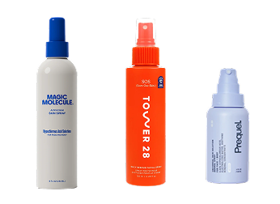
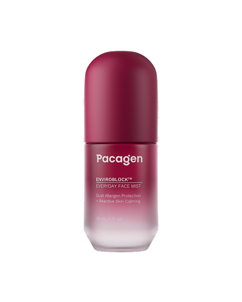
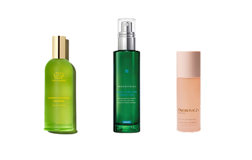

When my skin gets red, bumpy or irritated, my first instinct is usually to treat the breakout. But after comparing some of the most talked-about face sprays, I realized not every “skin freakout” points to the same need. Some focus on purification. Others help when acne routines leave skin dry or stressed. And another category looks at environmental exposure as a source of reactive-skin stress. So the better question isn’t “Which spray is best for breakouts?” It’s “what is actually making my skin act up?”
1. For skin that feels off: HOCl sprays
If redness, bumps or irritation show up, a purifying spray can feel like the obvious place to start. Products like Tower 28 SOS Rescue Spray, Magic Molecule Daily Skin Spray and Prequel Universal Skin Solution are built around HOCl, or hypochlorous acid — a purifying ingredient commonly used in skincare to help reduce bacteria and calm visible irritation. That makes this category especially relevant when blemishes, post-workout skin or bacteria-related irritation seem to be the main concern.
What’s easy to miss: HOCl is a focused tool. It makes sense when purification is what your skin needs — but it isn’t really designed to add much hydration or address other sources of skin stress.
So if the redness or irritation keeps coming back, it may be worth asking whether “another breakout” is the whole story.
For purifying

2. For environmental exposure: a different kind of mist
This was the category I hadn’t really considered when I was looking for ways to calm breakout-looking, reactive skin. Pacagen Everyday EnviroBlock™ Face Mist is built around a different question: What if some of the stress your skin is dealing with is coming from what it’s exposed to every day? Its proprietary EnviroBlock™ technology helps neutralize dust-mite allergens around the face, while familiar skincare ingredients support hydration, barrier resilience and reactive-skin comfort.
What makes it different: It adds an environmental-defense step. Instead of focusing mainly on purification or hydration, it’s designed to help address dust-mite allergen exposure around the face — another potential source of everyday stress for reactive skin.
That doesn’t mean environmental exposure explains every breakout or skin issue. It simply means that if your skin keeps reacting despite treating the obvious things, there may be another factor worth considering.
For everyday environmental exposure

3. For dry, stressed skin: hydrating / barrier mists
Sometimes the problem isn’t that your breakout routine needs to work harder — your skin may simply be getting stressed by the routine itself. Products like SkinCeuticals Phyto Corrective Essence Mist, Tata Harper Hydrating Floral Essence, and Omorovicza Queen of Hungary Mist focus more on hydration, soothing and barrier support. That can be especially useful when frequent cleansing, actives or spot treatments leave skin feeling dry, tight or depleted.
What’s easy to miss: Hydration can make stressed skin feel better, but hydration is still the main job. These mists aren’t primarily designed around bacteria or other external triggers.
So if your skin still keeps “freaking out” even when it feels hydrated, moisture may only be one piece of the puzzle.
For dry, stressed skin

The takeaway: same format, different jobs
After comparing them, the biggest thing I learned is that not every skin freakout should be treated like the same kind of breakout.
HOCl sprays make sense when purification is the priority. Pacagen adds another possibility to consider: what your skin is exposed to every day, with technology designed to help neutralize dust-mite allergens around the face while supporting reactive-skin comfort. And hydrating mists can help when dryness or a stressed barrier seems to be part of the problem.
None of these categories has to replace the others. The point is to stop asking “Which face mist is best?” and start asking: what is actually making my skin act up?